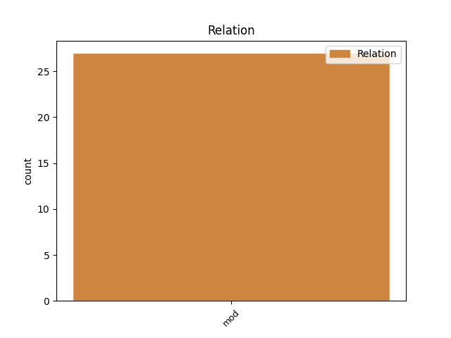
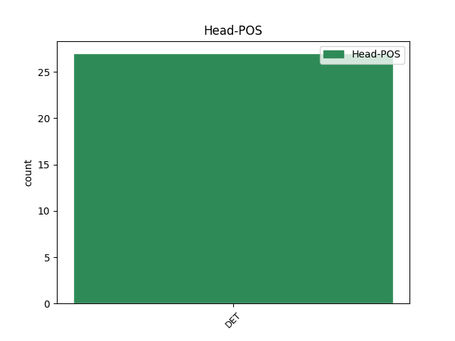
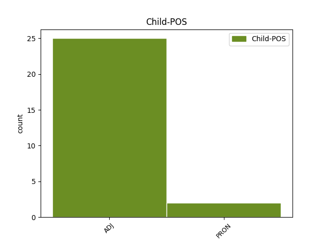

Distribution of features within this leaf



Agreement Rules sorted by frequency.
- When the dependent token is the modifer(mod) of the head token, and the head token is DET and the dependent token is ADJ.
1 Årets _ _ _ _ 0 _ _ _
2 kommunevalg _ _ _ _ 0 _ _ _
3 vil _ _ _ _ 0 _ _ _
4 ved _ _ _ _ 0 _ _ _
5 siden _ _ _ _ 0 _ _ _
6 av _ _ _ _ 0 _ _ _
7 mye mye ADJ _ Definite=Ind|Degree=Pos|Gender=Neut|Number=Sing 8 mod _ _
8 annet annen DET _ Definite=Ind|Gender=Neut|Number=Sing|PronType=Dem 0 _ _ _
9 også _ _ _ _ 0 _ _ _
10 gi _ _ _ _ 0 _ _ _
11 oss _ _ _ _ 0 _ _ _
12 et _ _ _ _ 0 _ _ _
13 svar _ _ _ _ 0 _ _ _
14 på _ _ _ _ 0 _ _ _
15 om _ _ _ _ 0 _ _ _
16 de _ _ _ _ 0 _ _ _
17 mindre _ _ _ _ 0 _ _ _
18 partiene _ _ _ _ 0 _ _ _
19 får _ _ _ _ 0 _ _ _
20 pusterom _ _ _ _ 0 _ _ _
21 i _ _ _ _ 0 _ _ _
22 senga _ _ _ _ 0 _ _ _
23 sammen _ _ _ _ 0 _ _ _
24 med _ _ _ _ 0 _ _ _
25 storebror _ _ _ _ 0 _ _ _
26 Arbeiderpartiet _ _ _ _ 0 _ _ _
27 . _ _ _ _ 0 _ _ _
1 Du _ _ _ _ 0 _ _ _
2 blir _ _ _ _ 0 _ _ _
3 eksponert _ _ _ _ 0 _ _ _
4 for _ _ _ _ 0 _ _ _
5 et _ _ _ _ 0 _ _ _
6 annet _ _ _ _ 0 _ _ _
7 språk _ _ _ _ 0 _ _ _
8 , _ _ _ _ 0 _ _ _
9 samtidig _ _ _ _ 0 _ _ _
10 som _ _ _ _ 0 _ _ _
11 du _ _ _ _ 0 _ _ _
12 får _ _ _ _ 0 _ _ _
13 skriftstimulering _ _ _ _ 0 _ _ _
14 i _ _ _ _ 0 _ _ _
15 ditt din PRON _ Gender=Neut|Number=Sing|Poss=Yes|PronType=Prs 16 mod _ _
16 eget egen DET _ Definite=Ind|Gender=Neut|Number=Sing|PronType=Prs 0 _ _ _
17 . _ _ _ _ 0 _ _ _
Disagree Examples:
1 Tidligere _ _ _ _ 0 _ _ _
2 kom _ _ _ _ 0 _ _ _
3 jo _ _ _ _ 0 _ _ _
4 slike _ _ _ _ 0 _ _ _
5 utbrudd _ _ _ _ 0 _ _ _
6 uventet _ _ _ _ 0 _ _ _
7 , _ _ _ _ 0 _ _ _
8 nå _ _ _ _ 0 _ _ _
9 kan _ _ _ _ 0 _ _ _
10 man _ _ _ _ 0 _ _ _
11 forberede _ _ _ _ 0 _ _ _
12 seg _ _ _ _ 0 _ _ _
13 på _ _ _ _ 0 _ _ _
14 en _ _ _ _ 0 _ _ _
15 helt hel ADJ _ Definite=Ind|Degree=Pos|Gender=Neut|Number=Sing 16 mod _ _
16 annen annen DET _ Definite=Ind|Gender=Masc|Number=Sing|PronType=Dem 0 _ _ _
17 måte _ _ _ _ 0 _ _ _
18 , _ _ _ _ 0 _ _ _
19 forteller _ _ _ _ 0 _ _ _
20 dronning _ _ _ _ 0 _ _ _
21 Sonja _ _ _ _ 0 _ _ _
22 . _ _ _ _ 0 _ _ _
1 I _ _ _ _ 0 _ _ _
2 artikkelen _ _ _ _ 0 _ _ _
3 ble _ _ _ _ 0 _ _ _
4 det _ _ _ _ 0 _ _ _
5 lagt _ _ _ _ 0 _ _ _
6 vekt _ _ _ _ 0 _ _ _
7 på _ _ _ _ 0 _ _ _
8 uttalelser _ _ _ _ 0 _ _ _
9 fra _ _ _ _ 0 _ _ _
10 Olle _ _ _ _ 0 _ _ _
11 Johansson _ _ _ _ 0 _ _ _
12 fra _ _ _ _ 0 _ _ _
13 Karolinska _ _ _ _ 0 _ _ _
14 Institutet _ _ _ _ 0 _ _ _
15 , _ _ _ _ 0 _ _ _
16 angivelig angivelig ADJ _ Definite=Ind|Degree=Pos|Gender=Neut|Number=Sing 17 mod _ _
17 en en DET _ Gender=Masc|Number=Sing|PronType=Art 0 _ _ _
18 av _ _ _ _ 0 _ _ _
19 " _ _ _ _ 0 _ _ _
20 verdens _ _ _ _ 0 _ _ _
21 ledende _ _ _ _ 0 _ _ _
22 forskere _ _ _ _ 0 _ _ _
23 på _ _ _ _ 0 _ _ _
24 stråling _ _ _ _ 0 _ _ _
25 og _ _ _ _ 0 _ _ _
26 helseeffekter _ _ _ _ 0 _ _ _
27 " _ _ _ _ 0 _ _ _
28 . _ _ _ _ 0 _ _ _
1 Det _ _ _ _ 0 _ _ _
2 var _ _ _ _ 0 _ _ _
3 faktisk faktisk ADJ _ Definite=Ind|Degree=Pos|Gender=Neut|Number=Sing 4 mod _ _
4 en en DET _ Gender=Masc|Number=Sing|PronType=Art 0 _ _ _
5 av _ _ _ _ 0 _ _ _
6 hovedgrunnene _ _ _ _ 0 _ _ _
7 til _ _ _ _ 0 _ _ _
8 at _ _ _ _ 0 _ _ _
9 romanfiguren _ _ _ _ 0 _ _ _
10 Armand _ _ _ _ 0 _ _ _
11 valgte _ _ _ _ 0 _ _ _
12 det _ _ _ _ 0 _ _ _
13 trygge _ _ _ _ 0 _ _ _
14 diplomatiet _ _ _ _ 0 _ _ _
15 . _ _ _ _ 0 _ _ _
1 Union _ _ _ _ 0 _ _ _
2 ble _ _ _ _ 0 _ _ _
3 nedlagt _ _ _ _ 0 _ _ _
4 , _ _ _ _ 0 _ _ _
5 men _ _ _ _ 0 _ _ _
6 da _ _ _ _ 0 _ _ _
7 det _ _ _ _ 0 _ _ _
8 skjedde _ _ _ _ 0 _ _ _
9 , _ _ _ _ 0 _ _ _
10 var _ _ _ _ 0 _ _ _
11 det _ _ _ _ 0 _ _ _
12 knapt knapp ADJ _ Definite=Ind|Degree=Pos|Gender=Neut|Number=Sing 13 mod _ _
13 en en DET _ Gender=Masc|Number=Sing|PronType=Art 0 _ _ _
14 politiker _ _ _ _ 0 _ _ _
15 utenfor _ _ _ _ 0 _ _ _
16 lokalmiljøet _ _ _ _ 0 _ _ _
17 som _ _ _ _ 0 _ _ _
18 løftet _ _ _ _ 0 _ _ _
19 røsten _ _ _ _ 0 _ _ _
20 , _ _ _ _ 0 _ _ _
21 langt _ _ _ _ 0 _ _ _
22 mindre _ _ _ _ 0 _ _ _
23 en _ _ _ _ 0 _ _ _
24 finger _ _ _ _ 0 _ _ _
25 , _ _ _ _ 0 _ _ _
26 for _ _ _ _ 0 _ _ _
27 å _ _ _ _ 0 _ _ _
28 oppfylle _ _ _ _ 0 _ _ _
29 sine _ _ _ _ 0 _ _ _
30 løfter _ _ _ _ 0 _ _ _
31 . _ _ _ _ 0 _ _ _
1 De _ _ _ _ 0 _ _ _
2 andre _ _ _ _ 0 _ _ _
3 NATO-landene _ _ _ _ 0 _ _ _
4 har _ _ _ _ 0 _ _ _
5 samlet _ _ _ _ 0 _ _ _
6 brukt _ _ _ _ 0 _ _ _
7 snaut snau ADJ _ Definite=Ind|Degree=Pos|Gender=Neut|Number=Sing 8 mod _ _
8 en en DET _ Gender=Masc|Number=Sing|PronType=Art 0 _ _ _
9 billion _ _ _ _ 0 _ _ _
10 til _ _ _ _ 0 _ _ _
11 . _ _ _ _ 0 _ _ _